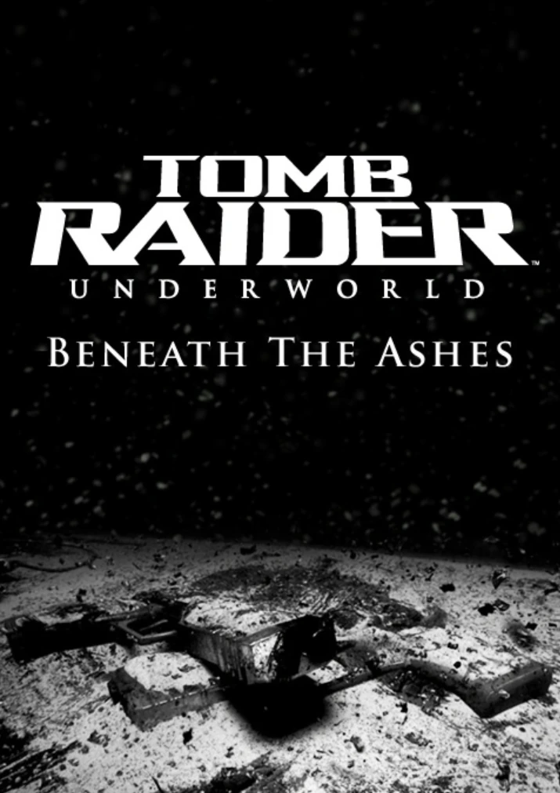
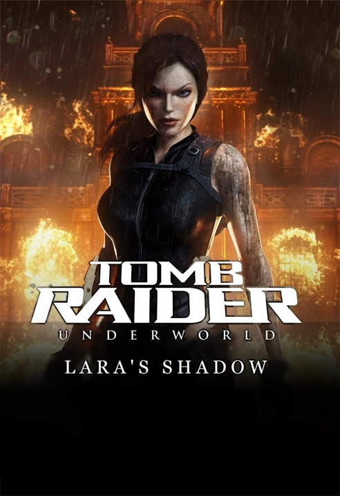

← Back to all games
Tomb Raider: Underworld
Selected credit / 2008
Tomb Raider: Underworld
I created the camera work for released in-engine cinematic sequences and co-developed a camera spline tool that simplified the cinematic workflow. Three of my original video examples are identified below.
Work samples
Screenshot gallery
Screenshot gallery ready for game captures. No unrelated or AI-generated gameplay images have been substituted.
Cinematic examples
Selected sequences
Selected cinematic camera work. Video playback will be added as the original sequences become available.
Tomb Raider: Underworld expansion · 2009

Beneath the Ashes
I contributed cinematic camera work to this story expansion. Additional sequence examples and production details can be added here.
↑ Back to project overviewTomb Raider: Underworld expansion · 2009

Lara’s Shadow
I contributed cinematic camera work to this story expansion featuring Lara Croft’s doppelgänger. Additional examples and production details can be added here.
↑ Back to project overview